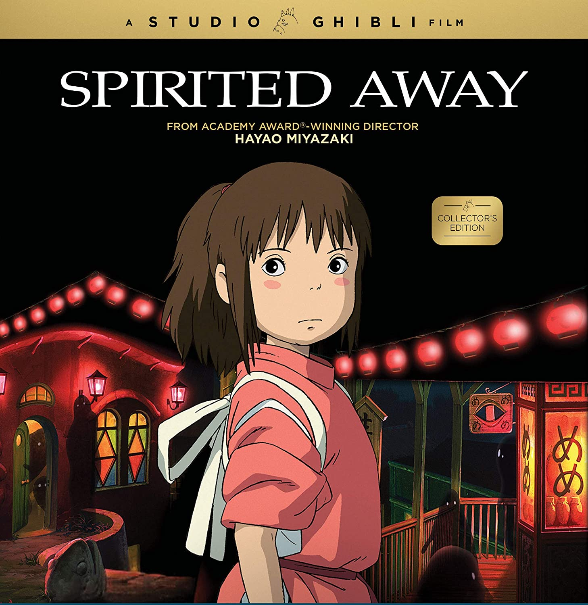

 Ten-year-old Chihiro and her parents are traveling to their new home. Her father, a man who loves to take shortcuts, ends up in front of a tunnel leading to what appears to be an abandoned village, which Chihiro's father insists on exploring despite his daughter's misgivings. While exploring, Chihiro finds an exquisite bathhouse and meets a boy named Haku, who warns her to return across the riverbed before sunset. However, Chihiro discovers too late that her parents have transformed into pigs, and she is unable to cross the now-flooded river. Haku finds Chihiro and advises her to ask for a job from the bathhouse's boiler-man, Kamaji. Kamaji asks Lin, a bathhouse worker, to send Chihiro to Yubaba, the witch who runs the bathhouse. Yubaba tries to frighten Chihiro away, but Chihiro persists, and Yubaba hires her. Yubaba takes away the second kanji of her name, Chihiro (千尋), renaming her Sen (千). Haku later warns her that if she forgets her name like he has forgotten his, she will not be able to leave the spirit world. Sen is treated poorly by the other bathhouse workers; only Kamaji and Lin show sympathy for her. While working, she invites a silent creature named No-Face inside, believing him to be a customer. A "stink spirit" arrives as Sen's first customer, and she discovers he is the spirit of a polluted river. In gratitude for cleaning him, he gives Sen a magic emetic dumpling. Meanwhile, No-Face, imitating the gold left behind by the stink spirit, tempts a worker with gold and then swallows him. He demands food and begins tipping expensively. He swallows two more workers when they interfere with his conversation with Sen. Sen sees paper Shikigami attacking a Japanese dragon and recognizes the dragon as Haku. When a grievously injured Haku crashes into Yubaba's penthouse, Sen follows him upstairs. A shikigami that stowed away on her back shapeshifts into Zeniba, Yubaba's twin sister. She transforms Yubaba's son, Boh, into a mouse and mutates Yubaba's harpy into a tiny bird. Zeniba tells Sen that Haku has stolen a magic golden seal from her, and warns Sen that it carries a deadly curse. Haku destroys the shikigami, eliminating Zeniba's manifestation. He falls into the boiler room with Sen, Boh, and the harpy, where Sen feeds him part of the dumpling, causing him to vomit both the seal and a black slug, which Sen crushes with her foot. With Haku unconscious, Sen resolves to return the seal and apologize to Zeniba. Sen confronts No-Face, who is now massive, and feeds him the rest of the dumpling. No-Face follows Sen out of the bathhouse, regurgitating everything and everyone he has eaten. Sen, No-Face, Boh, and the harpy travel by train to meet Zeniba. Yubaba orders that Sen's parents be slaughtered, but Haku reveals that Boh is missing and offers to retrieve him if Yubaba releases Sen and her parents. Zeniba reveals that Sen's love for Haku broke her curse and that Yubaba used the black slug to take control over Haku. Haku appears at Zeniba's home in his dragon form and flies Sen, Boh, and the harpy to the bathhouse. No-Face decides to remain with Zeniba. In mid-flight, Sen recalls falling years ago into the Kohaku River and being washed safely ashore, correctly guessing Haku's real identity as the spirit of the river and freeing him from Yubaba's spell in the process. When they arrive at the bathhouse, Yubaba forces Sen to identify her parents from among a group of pigs in order to break their curse. After Sen answers correctly that none of the pigs are her parents, she is free to go. Haku takes her to the now-dry riverbed and vows to meet her again. Chihiro returns through the tunnel with her parents, who do not remember anything after eating at the restaurant stall. Chihiro looks back at the tunnel, unsure if her adventure really happened. When they reach their car, they find it covered in dust and leaves, but drive off toward their new home.